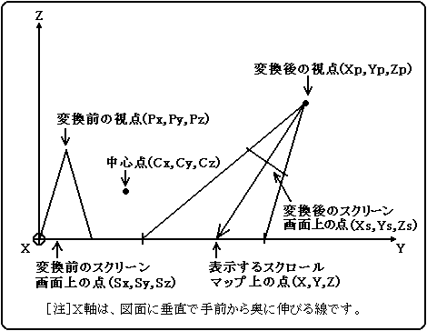

★
HARDWARE Manual★
VDP2ユーザーズマニュアル
★
HARDWARE Manual★
VDP2ユーザーズマニュアル
| 画面 | 単独表示 | 回転パラメータとの関係 | RBG0 | 可 | 回転パラメータA、Bのどちらか一方によって指定される1画面、 または回転パラメータA、Bでそれぞれ指定される2画面を同時に表示可能 |
RBG1 | 不可（RBG0も表示 しなければならない） | 回転パラメータBによって指定される画面を表示 |
|---|
図6.1 回転スクロール画面の表示方法

┌ ┐ ┌ ┐ ┌ ┐ ┌ ┐ ┌ ┐
│Xp│ │A B C│ │Px - Cx│ │Cx│ │Mx│
│Yp│ = │D E F│ x │Py - Cy│ + │Cy│ + │My│
│Zp│ │G H I│ │Pz - Cz│ │Cz│ │Mz│
└ ┘ └ ┘ └ ┘ └ ┘ └ ┘
┌ ┐ ┌ ┐ ┌ ┐ ┌ ┐ ┌ ┐
│Xs│ │A B C│ │Sx - Cx│ │Cx│ │Mx│
│Ys│ = │D E F│ x │Sy - Cy│ + │Cy│ + │My│
│Zs│ │G H I│ │Sz - Cz│ │Cz│ │Mz│
└ ┘ └ ┘ └ ┘ └ ┘ └ ┘
A, B, C, D, E, F, G, H, I：回転マトリクスパラメータ
Px, Py, Pz：回転変換前の視点座標
Sx, Sy, Sz：回転変換前のスクリーン画面座標
Cx, Cy, Cz：回転中心座標
Mx, My, Mz：平行移動量
Xp, Yp, Zp：回転変換後の視点座標
Xs, Ys, Zs：回転変換後のスクリーン画面座標
X − Xp Y − Yp Z − Zp ―――― ＝ ―――― ＝ ―――― Xs− Xp Ys− Yp Zs− Zp
X = k (Xs−Xp)＋Xp Y = k (Ys−Yp)＋Yp
−Zp
k = ――――
Zs− Zp
┌ ┐ ┌ ┐ ┌ ┐ ┌ ┐ ┌ ┐
│Sx│ │a b 0│ │Hcnt - Csx│ │Csx│ │Msx│
│Sy│ = │c d 0│ x │Vcnt - Csy│ + │Csy│ + │Msy│
│Sz│ │0 0 1│ │ 0 │ │ 0 │ │Msz│
└ ┘ └ ┘ └ ┘ └ ┘ └ ┘
a, b, c, d：スクリーン画面の回転マトリクスパラメータ
Hcnt, Vcnt：HVカウンター値
Csx, Csy：スクリーン画面の回転中心座標
Msx, Msy, Msz：スクリーン画面の平行移動量
Sx = Xst＋DX・Hcnt＋DXst・Vcnt Sy = Yst＋DY・Hcnt＋DYst・Vcnt Sz = Zst
Xst = −a・Csx−b・Csy＋Csx＋Msx Yst = −c・Csx−d・Csy＋Csy＋Msy Zst = Msz △X = a △Y = c △Xst = b △Yst = d Xst, Yst, Zst：スクリーン画面スタート座標 △X, △Y ：スクリーン画面水平方向座標増分 △Xst, △Yst：スクリーン画面垂直方向座標増分
X = kx (Xsp＋dX・Hcnt)＋Xp Y = ky (Ysp＋dY・Hcnt)＋Yp
Xsp = A{(Xst＋△Xst・Vcnt)−Px}＋B{(Yst＋△Yst・Vcnt)−Py}＋C(Zst−Pz)
Ysp = D{(Xst＋△Xst・Vcnt)−Px}＋E{(Yst＋△Yst・Vcnt)−Py}＋F(Zst−Pz)
Xp = A(Px−Cx)＋B(Py−Cy)＋C(Pz−Cz)＋Cx＋Mx
Yp = D(Px−Cx)＋E(Py−Cy)＋F(Pz−Cz)＋Cy＋My
dX = A・DX＋B・DY
dY = D・DX＋E・DY
Xst、Yst、Zst：スクリーン画面スタート座標
△Xst、△Yst：スクリーン画面垂直方向座標増分
△X、△Y：スクリーン画面水平方向座標増分
A、B、C、D、E、F：回転マトリクスパラメータ
Px、Py、Pz：視点座標
Cx、Cy、Cz：中心座標
Mx、My：平行移動量
kx、ky：拡大縮小係数
Hcnt、Vcnt：HVカウンター値
★HARDWARE Manual
★VDP2ユーザーズマニュアル